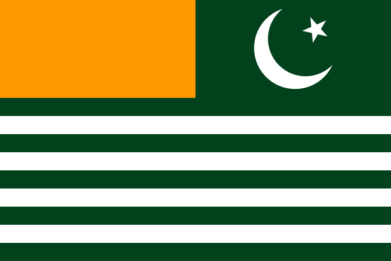
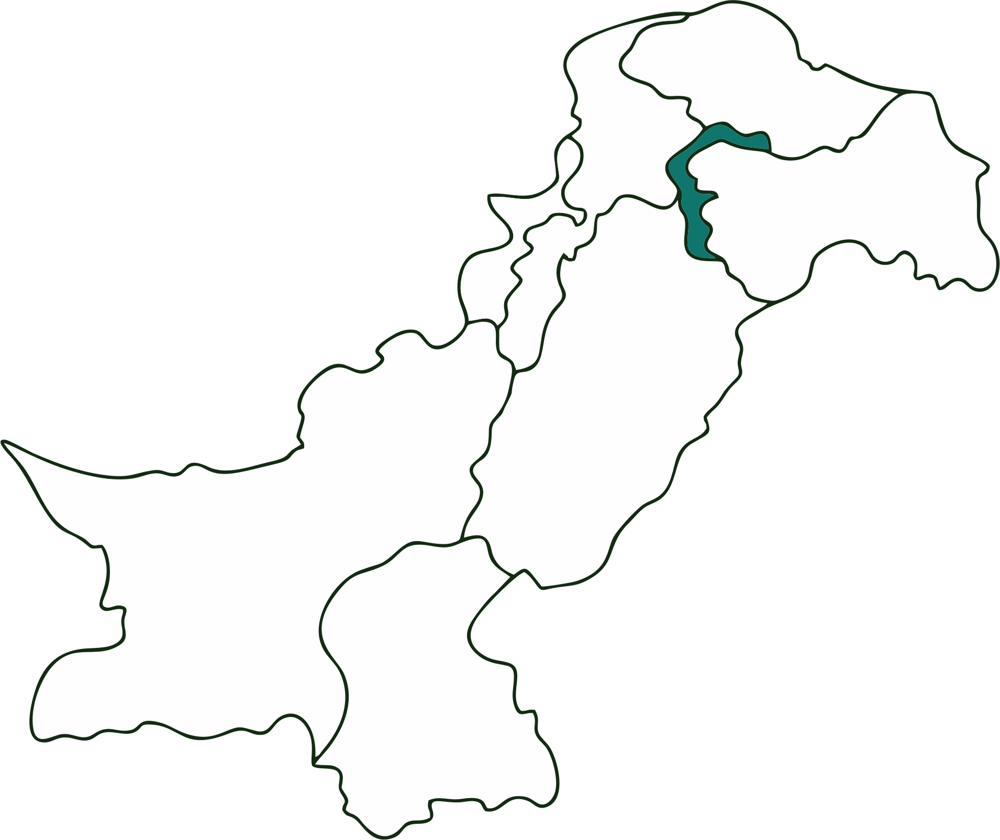

State Flag
State Emblem

Location

Overview
The Valley of Beauty
Azad (Free) Jammu & Kashmir is a self-governing state under the protection of Pakistan. It is world-famous for its breathtaking natural beauty, including the Neelum Valley, lush forests, and waterfalls.
It boasts a high literacy rate (74%) and a strong connection to the global diaspora. The culture is a blend of mountain traditions, Sufi wisdom, and resilience.